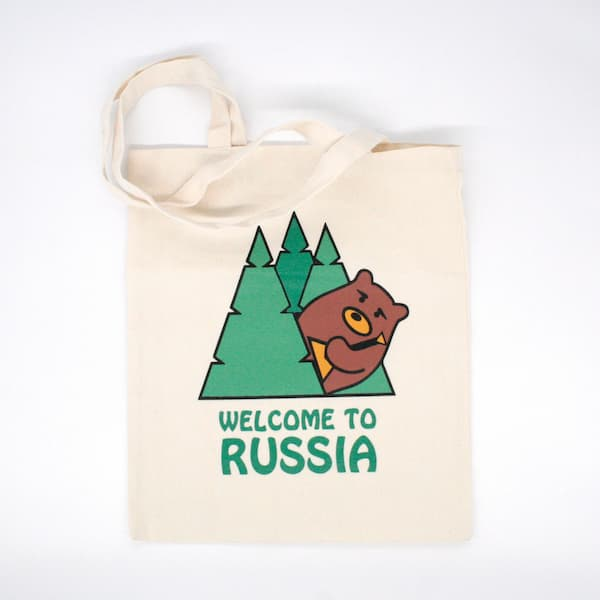
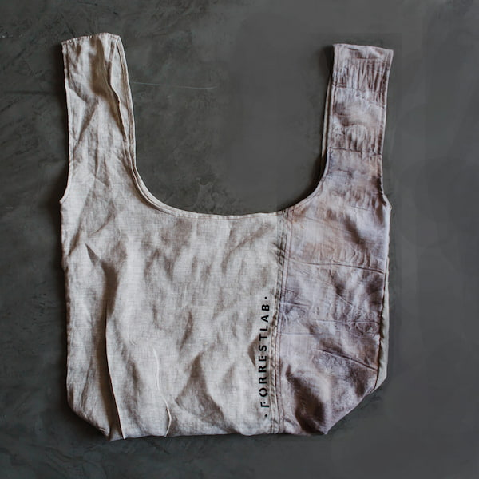
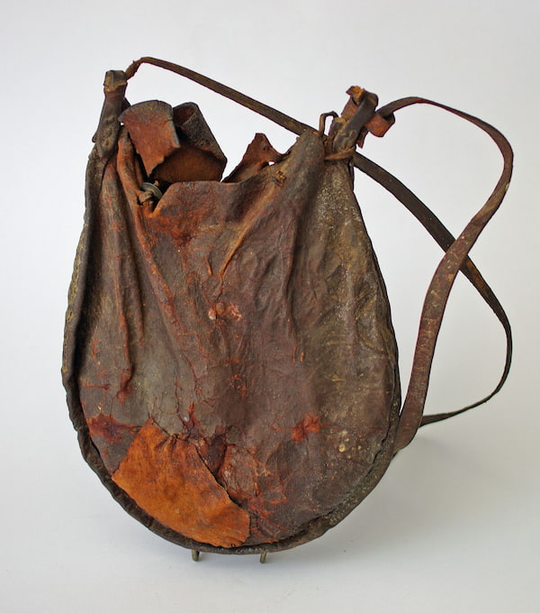
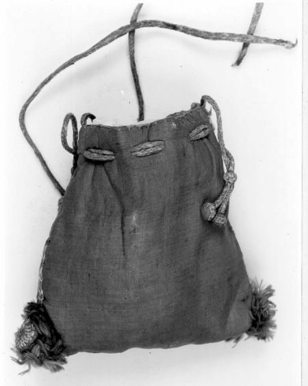
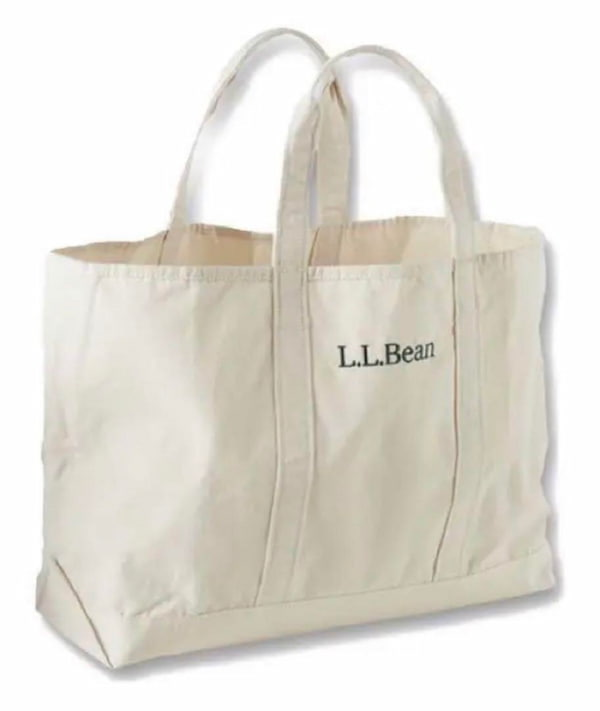
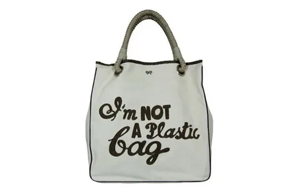

Шоппер – это многофункциональная сумка, которая стала неотъемлемой частью современной жизни. Сегодня это не просто сумка для покупок, а универсальный аксессуар, подходящий для офиса, прогулок и даже модных показов. Его носят все: от женщин до мужчин, от детей до взрослых.

История шоппера уходит корнями в XIX век, когда люди использовали простые тканевые мешки и авоськи для походов на рынок. Эти сумки были без жесткой формы и предназначались исключительно для переноски покупок.



Настоящий прорыв произошел в 1944 году, когда американский бренд L.L.Bean представил Boat and Tote Bag – прочную холщовую сумку с двумя ручками. Изначально созданная для переноски льда, она быстро завоевала популярность благодаря своей практичности.

В середине XX века тканевые сумки начали вытесняться пластиковыми пакетами. Однако к 80-м годам общество осознало вред пластика для окружающей среды, и многоразовые тканевые сумки вновь стали набирать популярность.
Переломным моментом стал 2007 год, когда дизайнер Anya Hindmarch выпустила знаменитую сумку “I’m Not a Plastic Bag”. Этот минималистичный холщовый шоппер стал символом экологичного образа жизни и мгновенно разошелся миллионными тиражами.

Сегодня шопперы представлены в различных вариациях:
Универсальность шоппера поражает:
Шоппер стал не просто аксессуаром, а настоящим символом осознанного потребления. Он объединяет в себе:
В современном мире шоппер продолжает эволюционировать, адаптируясь к новым трендам и вызовам времени, оставаясь при этом верным своей первоначальной миссии – быть практичным и экологичным решением для переноски вещей.
Сегодня это не просто сумка, а полноценный элемент стиля, который помогает выразить индивидуальность и приверженность экологичному образу жизни.